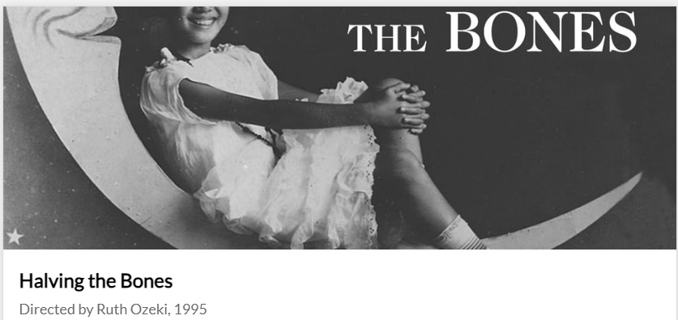
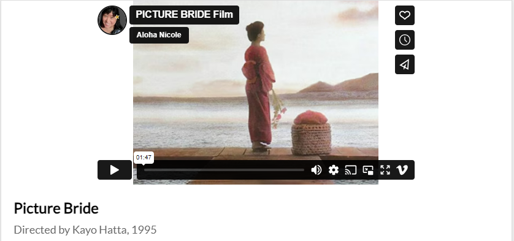
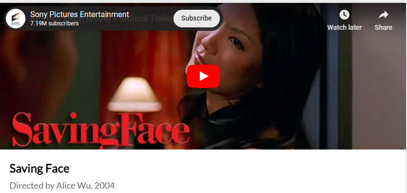
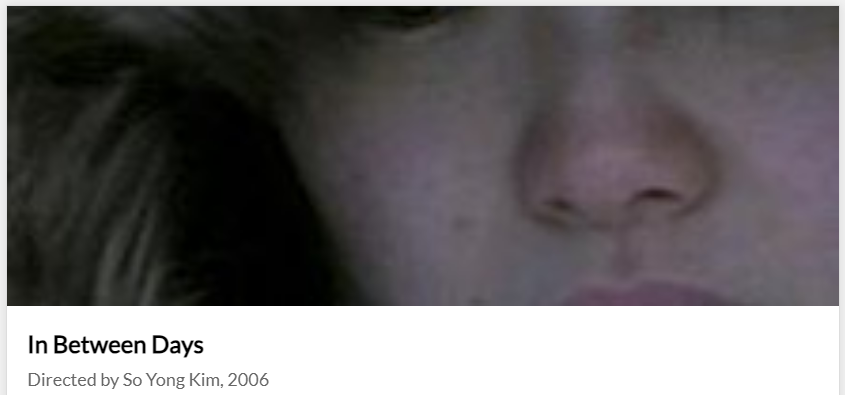
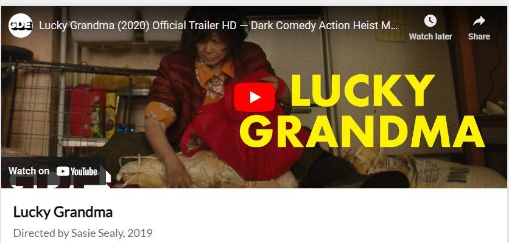
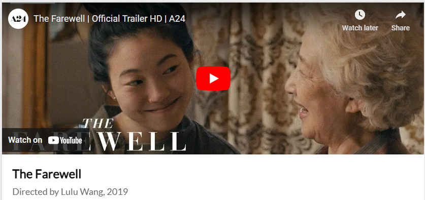
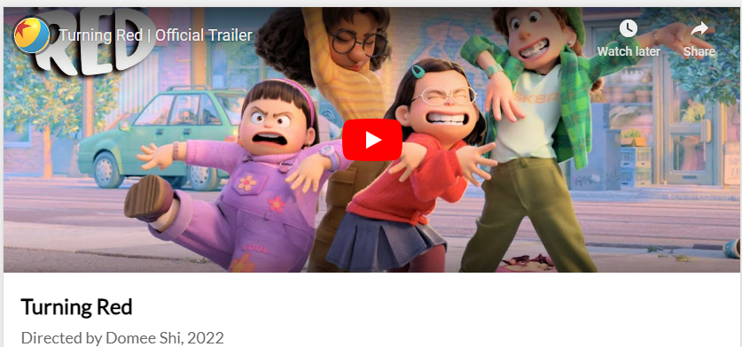
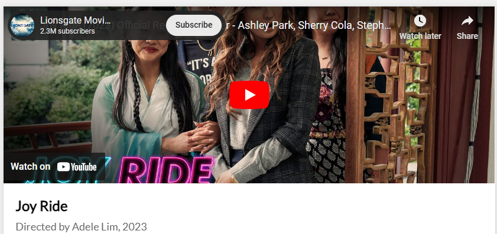
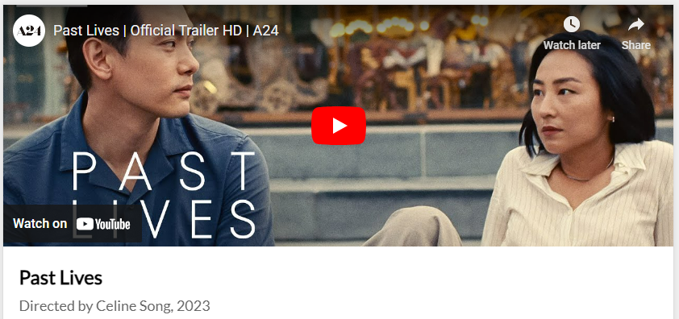

Double Happiness
 Mina Shum
Mina Shum
Halving the Bones  Ruth Ozeki
Picture Bride  Kayo Hatta
Saving Face  Alice Wu
In Between Days  So Yong Kim
Lucky Grandma  Sasie Sealy
The Farewell  Lulu Wang
Turning Red  Domee Shi
Joy Ride  Adele Lim
Past Lives  Celine Song